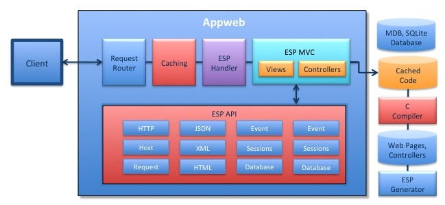
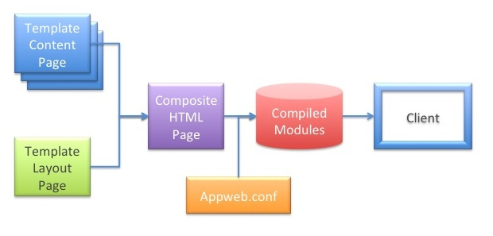

Quick Nav
See Also
Embedded Server Pages Overview
Embedded Server Pages (ESP) is a web framework that makes it dramatically easier to create blazing fast, dynamic web applications. ESP uses the "C" language for server-side web programming which allows easy access to low-level data for management user interfaces.
However, ESP is not a traditional low-level environment. If web pages or controllers are modified during development, the code is transparently recompiled and reloaded. ESP uses a garbage-collected environment memory management and for safe programming. This enables unparalleled performance with "script-like" flexibility for web applications. environment and blazing runtime speed.
The ESP web framework provides a complete set of components including: an application generator, web request handler, templating engine, Model-View-Controller framework, Web Sockets, database migrations and an extensive programming API.
This document describes the ESP web framework and how to use ESP. Note that ESP is integrated into Appweb and is not a separate product.
ESP Patterns
ESP supports several design patterns:
- Stand-alone ESP web pages
- Web Services via ESP Controllers
- ESP Model-View-Controller applications (MVC)
- Single Page Applications (SPA)
Your applications can choose a predominating pattern or you can mix patterns in a single application if desired.
Stand-alone Pages
An ESP page is a standard HTML web page with embedded "C" code that executes at run-time to create a dynamic client response. Pages typically have a ".esp" extension and may use ESP layout pages to define the look and feel of the application in one place.
The C code is embedded between <% and %> tags. For example:
<h1>Hello World</h1>
<p><% render("A random number %d", rand(0)); %></p>
When the web page is requested, the web page including the code inside the ESP tags is compiled and saved as a shared library. When executed the render call replaces tag code in the resulting page sent to the client. The code inside the ESP tags is any standard C code.
If the page is modified, the next time it is requested, the page and embedded C code will be transparently recompiled and reloaded.
See ESP Pages below for more details.
Web Services
ESP is especially we suited for high performance web services. ESP permits the binding of URLs directly to C functions via Appweb routes. When the URL is requested, the corresponding C function, often called an "action", is executed to dynamically generate a response. The actions are typically grouped into a loadable ESP controller file. For example:
/* Hello Action */
static void hello() {
render("{greeting: 'Hello World'}\n");
finalize();
}
/* Initialization of Actions */
ESP_EXPORT int esp_module_greeting(HttpRoute *route, MprModule *module) {
espDefineAction(route, "greeting-hello", hello);
return 0;
}
This is a loadable ESP controller with one action function. The actions are published by binding via Routes to URLs When the appropriate URL is requested, the "hello" function is run to generate the response. During development, if the file containing this code is modified, the page will be transparently recompiled and reloaded before running the new code.
Model-View-Controller
A Model-View Controller application, also known as an MVC app, is a proven paradigm for organizing larger web applications. In this pattern, it is the "model" that manages the state of the application including the database. The "controller" responds to inputs and invokes then the relevant "views" to generate the user interface. Originally developed in the '70s, it has been more recently adapted for web applications and been popularized by frameworks such as Ruby on Rails. ESP uses the same paradigm with an embedded spin.
ESP supports MVC applications and provides an esp application generator to generate MVC application skeletons and scaffolds.
ESP support two styles of MVC applications:
- Single Page Applications
- Server-side MVC Applications
Single Page Applications
Single page applications deliver the entire web application as a single page and then incrementally download resources and data in the background as required. With this paradigm, it is the client that defines the entire user interface via a client-side Javascript framework such as Angular. The server provides the initial page load and ongoing data. This approach can provide a more responsive and fluid user experience without the delays caused by page reloads.
ESP is well suited to SPA applications and can deliver all the required resources and data for such apps.
ESP includes support for the Angular SPA client framework. The esp application generator can generate Angular application skeletons and client-side scaffolds.
Server-side MVC Applications
An alternative approach to MVC web applications is to generate HTML pages dynamically at the server. ESP provides a powerful HTML templating engine with master page layouts. This permits the easy insertion of dynamic data into web pages before they are delivered to the client.
ESP Web Framework
The main components of the ESP Web Framework are:
- ESP Handler — ESP request handler
- ESP Pages — ESP Pages and Layouts
- ESP Controllers — ESP Controllers and Actions
- ESP Models — ESP Models and Databases
- ESP Compilation — Compile ESP pages, controllers and applications
- ESP Generator — Generate applications, controllers and scaffolds
- ESP API — ESP Programming Interface
ESP Handler
Appweb hosts the ESP handler via a loadable module called libmod_esp. This is an Appweb module that includes the ESP web framework. The module is configured by directives in the appweb.conf configuration file.
LoadModule espHandler libmod_esp AddHandler espHandler esp
This will load the ESP module and serve all URLs that end with ".esp" via the ESP handler.
ESP applications are defined via the EspApp directive. For example:
<EspApp name="store" prefix="/store" dir="/dir/to/storeApp">
...
</EspApp>
This defines an ESP application at the URI "/store" in the directory "/dir/to/storeApp".
ESP Pages
The ESP pages are responsible for generating the user interface and provide:
- Embedded "C" language code for dynamic HTML responses
- Master layout pages for consistent UI look and feel
- An ESP API library to render output
Note that if using ESP for a Single Page Architecture application, the views are typically generated by the client using a client-side framework such as Angular. In this case, ESP pages are used for the initial, "single" home page.
ESP Pipeline
The ESP pipeline processes ESP pages to generate client responses. The process begins with with an HTML page which typically, though not always, contains embedded "C" code. This is parsed by the ESP Template Engine and combined with layout pages to create a single composite web page. This is then converted to pure "C" code that is compiled, linked and saved as a native-code shared library. The library is loaded and the code run whenever a client request is received for that page. If the web page or template is modified, the pipeline recompiles the page and regenerates the code library.
This entire pipeline process happens transparently in the background with only a momentary pause in processing. For production, you can pre-compile web pages so that a compiler is not required on the target.
Layout Pages
Layout pages allow you to define the "look and feel" of the user interface and specify the standard elements of all web pages in one place. ESP pages reuse the "look and feel" by simply referencing a layout page.
The layout page is structurally just an ESP Page that typically contains the top level HTML structure, style sheets and graphic content to be included on every page. It may contain embedded "C" code, and most importantly, it specifies the location to insert content from content pages.
The ESP content pages supply the content and data that is unique to that page. Content pages do not replicate the layout and look and feel that is specified in the layout page. In this way, changing the layout page in once place will automatically change every web page in the application.
Here is a simple layout page:
<html>
<body>
<img src="banner.jpg">
<%@ content %>
</body>
</html>
The <%@ content %> directive instructs the Template Engine to insert the content page at this location.
Here is a simple content page. Note that this is missing the <html> and <body> tags:
<h1>Hello World</h1> <p>Today is <%= mprGetDate(0) %>
ESP pages are not required to use layout pages. To specify that no layout page is required, use an empty layout directive in the content page. For example:
<%@ layout "" %>
By default, stand-alone ESP pages do not use a layout page, whereas ESP view pages in an MVC application do.
ESP Page Directives
ESP Template Engine supports the following web page directives. These can be used in layout or content pages:
<% C-code %> <%= C-expression %> @!variable @@param @#field @| @~ <%@ include "filename" %> <%@ layout "file" %>
The <% "C" code %> directive will insert the given code at this location. At run-time, this code will execute. A typical use of this directive is to call the render API to write data back to the client at this position in the web page.
The <%= "C" expression %> directive will evaluate the expression and substitute the resulting string value into the web page. A printf format specifier can be used to specify a different variable type. For example, if ivar is an integer:
<%= %d ivar %>
The @!variable directive is a shortcut for <%= expression %>.
The @@param directive substitutes the value of a request parameter or session variable of the same name after HTML escaping the value.
The @~ is replaced with a URL to the top of the application. This addresses the "client" documents directory.
The @| is replaced with a URL to the top server-side prefix of the application. This addresses the server-side controllers.
The <% include "filename" %> directive will include the given file name at the location of the directive when parsing the web page. Included files may contain ESP directives and include directives can be nested.
The <%@ layout "file" %> directive specifies the name of the layout page. By using this directive in layout pages, you can build up the web page layout by nesting layout pages. If omitted in content pages, which is usually the case, the default layout of layouts/default.esp will be used. If omitted in layout pages, it is assumed the layout page is the top level layout page.
The template engine additionally supports the following web page directive in layout pages:
<%@ content %>
This specifies the location for the content page data.
Note: you do not have to use layout pages. Simple stand-alone web pages without layouts code are supported. To disable use of a layout page, use a <%@ layout="" %> directive.
See ESP Page Directives for more directives.
ESP Controllers
Controllers are collections of ESP action functions that are bound to specific URLs. Controllers group a set of actions that operate on a resource or group of resources. A controller may be advertised by one or more routes. Often a controller will use RESTful routes to map URLs to specific actions.
A controller is typically coded in a single source file, though it can reference any external libraries. The controller will be dynamically compiled, saved and loaded when a request is received for any action in the controller. If the source code is modified, the controller will be recompiled and reloaded. Alternatively, the ESP generator utility can be used to precompile controllers so that a compiler is not required on the target system in production. Compiled controllers are saved in a cache directory as shared libraries.
Actions
When ESP receives a request to service, the request is parsed and then dispatched to a specific function in the controller called an "action". The job of the action function is to:
- Respond to the request
- Render a response view back to the client
How the action responds to the request depends on the request parameters, that include the query information, form parameters and other HTTP and application state information.
Here is a sample action function that updates a database table based on user submitted form data in "params".
static void update() {
if (updateFields("post", params())) {
inform("Post updated successfully.");
redirect("@");
} else {
renderView("post-edit");
}
}
An action function can explicitly render data by calling one of the render methods. It can redirect the client to a new URI via the redirect method.
If the action method does not explicitly render any data, ESP will render an ESP web page of the same name as the action function. That web page has full access to the controller and request state. This is a common pattern where a controller will respond to a request and an ESP view page will format the response to the client.
ESP Models and Databases
The Model part of an MVC framework stores the application data and access logic and may provide an Object Relational Mapping (ORM) layer. Unfortunately, while being powerful and extensive, ORMs often consume considerable amounts of memory and can be slow at run-time. ESP avoids this problem by providing a simple mapping from relational database data to "C" based records and grids. This results in a high-performance database interface with very low memory requirements.
Embedded Database Interface
ESP supports an Embedded Database Interface (EDI) above a user-selectable database such as: SQLite or MDB. The MDB database is a tiny, in-memory database — great for embedded applications. SQLite is a full SQL implementation for embedded applications. MDB is the smallest and fastest, but has the least features.
Migrations
The ESP generator program can create database migration modules. These are mini-programs that create and modify database tables. Migrations are useful to create databases and test data.
C Compiler
To compile ESP pages and controllers into native code for execution, a "C" language compiler is required. When developing, the compiler is used to transparently compile and recompile ESP pages and controllers as they are modified. This results in a set of shared-library files that represent the ESP application.
Deployment
To deploy an ESP application, only the saved library files are required. The source code for the ESP pages and controllers is typically not deployed. Of course, if you wish to continue to provide transparent compilation once deployed, then include the source and enable EspUpdate in the appweb.conf configuration file.
The esp generator program can also be used to compile an ESP application including all ESP pages and controllers. For example:
esp compile
Cross Compilation
If your target system is of a different architecture to your development system, you will need to cross-compile your ESP application for the target. When cross-compiling, prepare a version of the appweb.conf and esp.conf configuration files for your target. Then invoke the following to cross compile the ESP pages and controllers.
esp --config cross.conf compile ...
If you have specific cross-compilation requirements, you may need to edit the esp.conf file to define the appropriate compilation command line for your target.
ESP Generator
The ESP framework includes a utility program to generate new applications, controllers, models, migrations and scaffolds. This program is called esp and automates many common tasks when dealing with MVC applications.
To create a new bare-bones application called demo:
mkdir demo cd demo esp install esp-server
This will create the following files:
- appweb.conf
- package.json
- paks
When you run Appweb, ESP will automatically compile and components as required.
To create a more featured MVC demo application with support for the Angular client framework, first first download the esp-angular-mvc package from the Pak Catalog using Pak. The following sequence will generate an application with ESP for Angular support.
mkdir demo cd demo pak cache esp-angular-mvc esp install esp-angular-mvc
ESP API
The ESP web framework has an extensive suite of APIs to cover all possible design needs. It also defines an expressive, terse, short-form API that makes common tasks simple. See the ESP API Reference for more details.
ESP uses a garbage collector so that you never need to free ESP memory allocated in web pages or in controllers. This allows you to use the Decorator pattern and function chaining in your C code without complex memory freeing or error handling.